| Thumbnail | Make & Model | Notes |
| Post-war
Vintage |
|---|
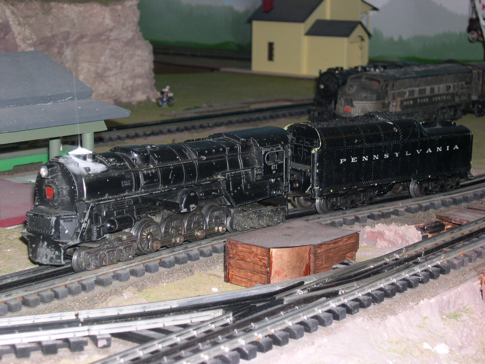 |
Lionel 671
Pennsylvania Steam Turbine |
Purchased in Madison in 1988. Runs better forward than in
reverse. The tender whistle needs a good clean and lube. It
tends to come off the tracks on certain switches. Vintage,
late 40's or early 50's. |
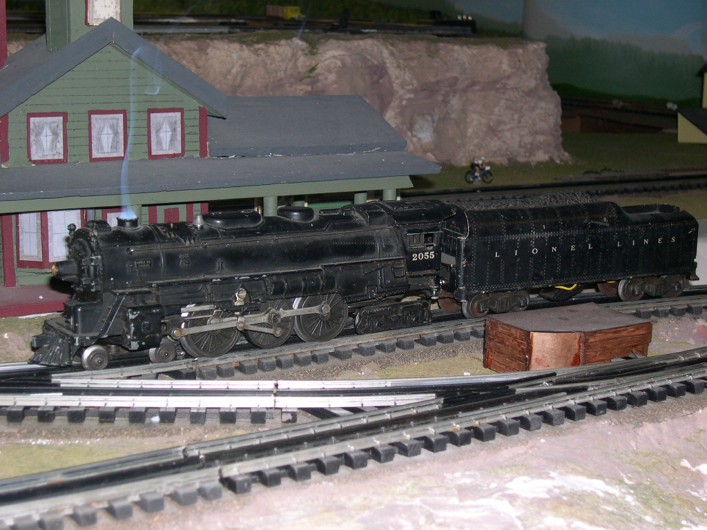 |
Lionel 2055
Steam Engine |
Gift from OLIS in 1986. This steamer is not as powerful as
the turbine, L671. The tender whistle needs a good
clean and lube. Vintage 1953. |
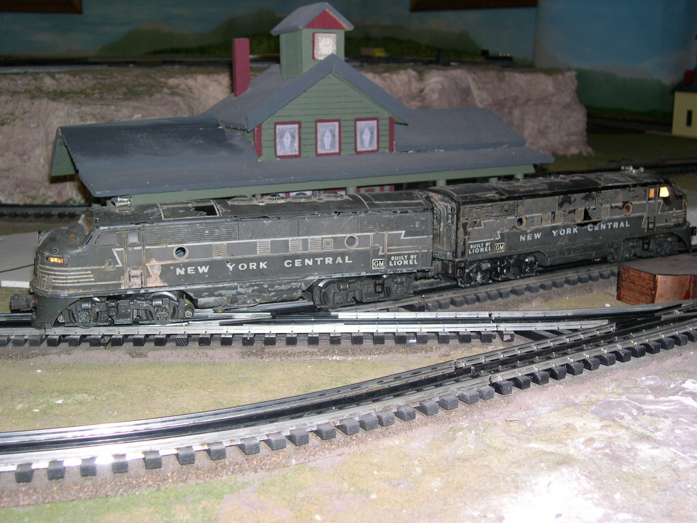 |
Lionel 2333
New York Central F3 Diesel |
Gift from Uncle Roy when I was young (in the 1960's).
The bodies of both the engine and dummy were abused when I was a
kid. The wiring has been replaced. The E unit
doesn't always work. The electrol couplers have been
completely disabled so that they stay closed over a variety of
switches. Recently, I had to drill out the battery door
screw and replace the old thumb screw with a self tapping
philips head. The dummy body has a very large crack along
the top. Also, the front NYC decal has peeled off of both
bodies. It might be possible to improve the looks of both
bodies with some well matched gray paint. Vintage, late
1940's or 1950's. |
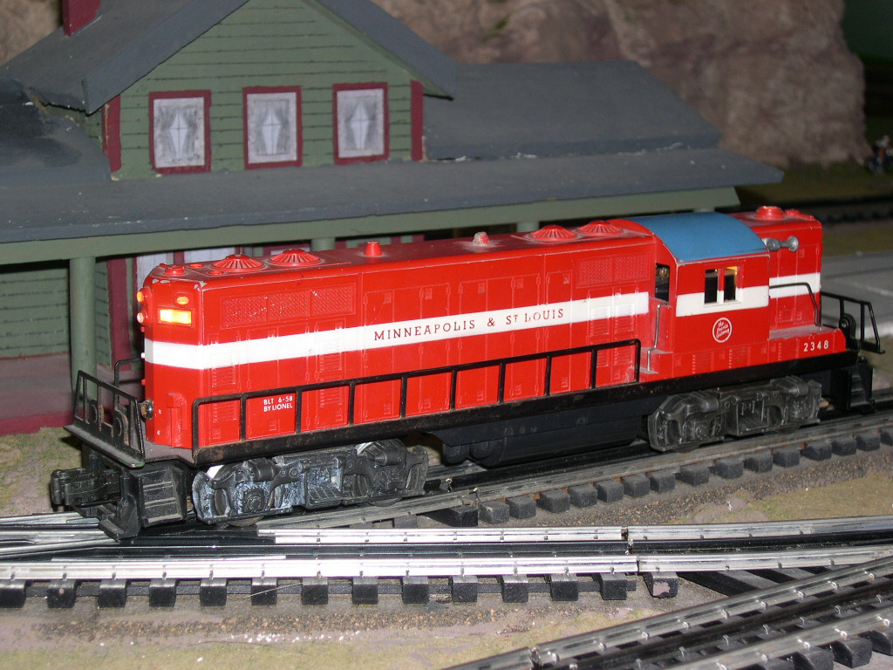 |
Lionel 2348
Minneapolis & St. Louis GP-9 Diesel |
Runs well. Like the others of this vintage it has
magnatraction. I think I purchased this in the late 1980's but
I don't recall exactly. Vintage, 1958. |
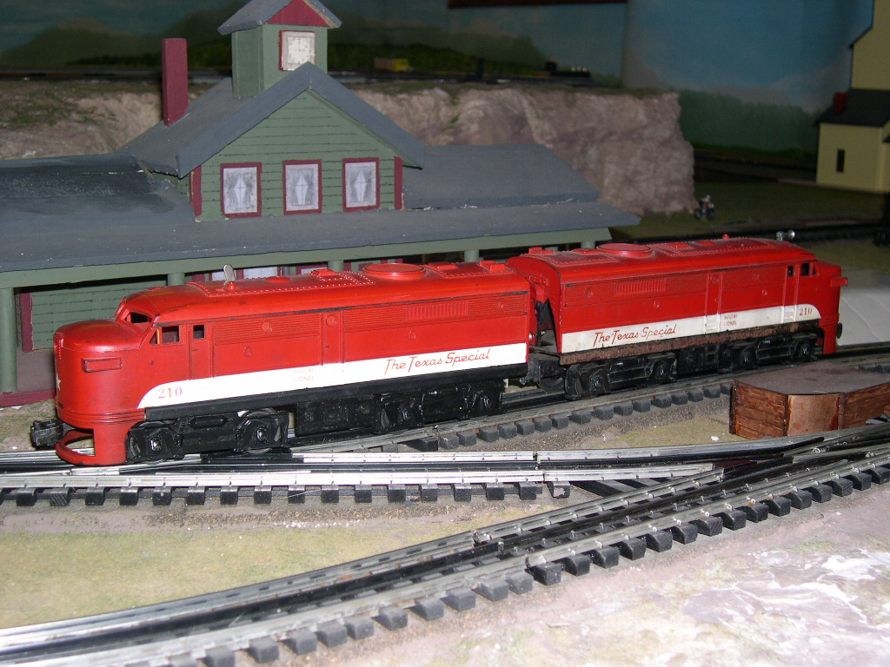 |
Lionel 210
Texas Special Alco FA-2 Diesel |
Runs but not well in both directions. Like the others of
this vintage it has magnatraction but no horn. This is one of
several engines that my father discovered at a garage sale.
Vintage, 1958. |
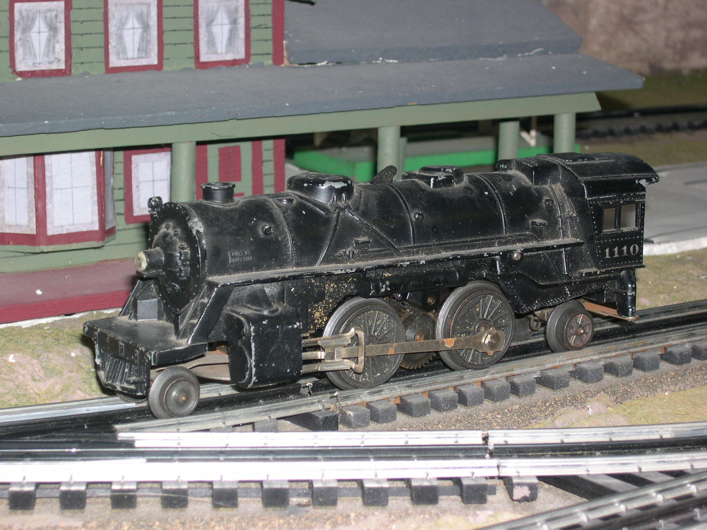 |
Lionel 1110
Scout Steam Locomotive |
Runs but not well in both directions. Unlike the others of
this vintage it does not have has magnatraction which is what
places this engine to 1951 or 1952 (even though these were made
as early as 1949). It has a light, two direction E-unit, and no
smoke unit. I'm not sure whether I have the original tender or
not as they are all mixed up. Vintage 1951 or 1952. |
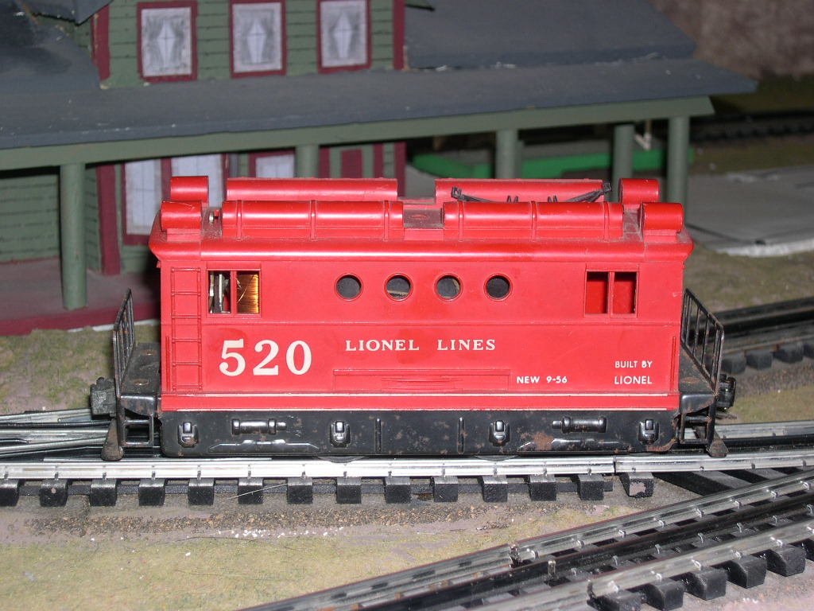 |
Lionel 520
Box Cab Electric,
GE 80 Ton Locomotive |
Given to me by my father. He found it at a garage sale. It
has only the Lionel name on it but it is a prototype of the GE
80 ton locomotive. The pantograph is incomplete. Vintage 1956. |
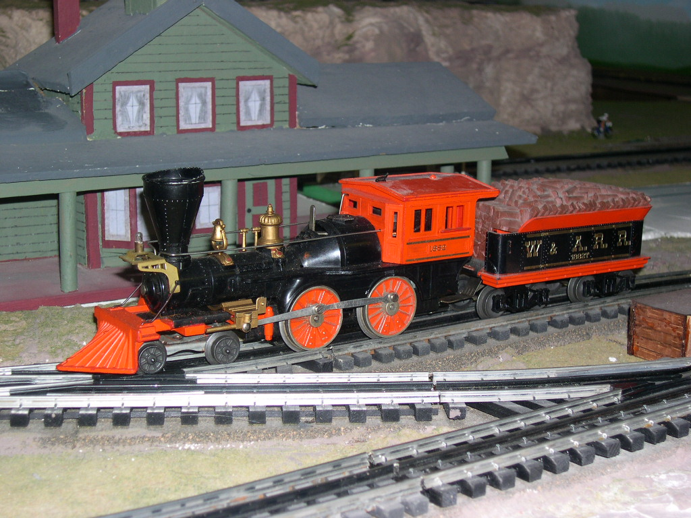 |
Lionel 1882
The General Steam Locomotive |
Given to me by my father. The General is a Western and
Atlantic steam engine. This one happens to be an uncatalogued
promotional item made in 1960 (orange wheels and cab). There is
no smoke or horn (as best as I can tell). It runs fine with a
two-direction E-unit. There is apparently a Disney movie called
the Great Locomotive Chase that is based on a civil war event
the involved the theft of the General by the north. The General
was chased appearently by another engine known as the Texas.
Vintage 1960. |
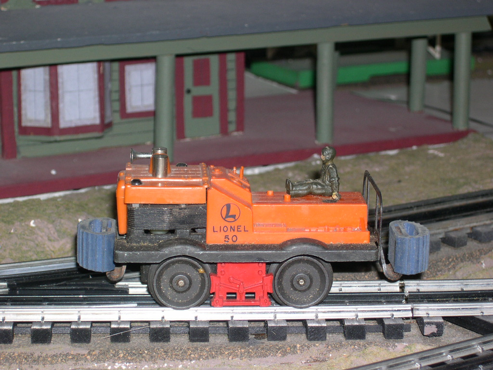 |
Lionel 50
Section Gang Car |
Given to me by my father. Needs maintenance before it can be
run again. Vintage 1955. |
| Middle or Unknown
Vintage |
|---|
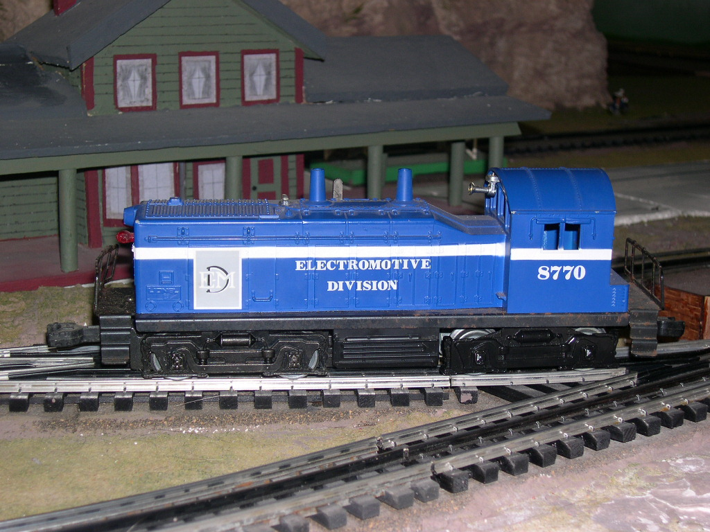 |
Lionel 8770
EMD NW-2 Diesel-Electric |
Runs fine. From my father. Light, two position E unit, no horn,
and no operating couplers. The drive truck is metal and the other
truck is plastic. Look is similar to a Lionel 600 EMD originally
made in 1955. Likely vintage, 1970's. |
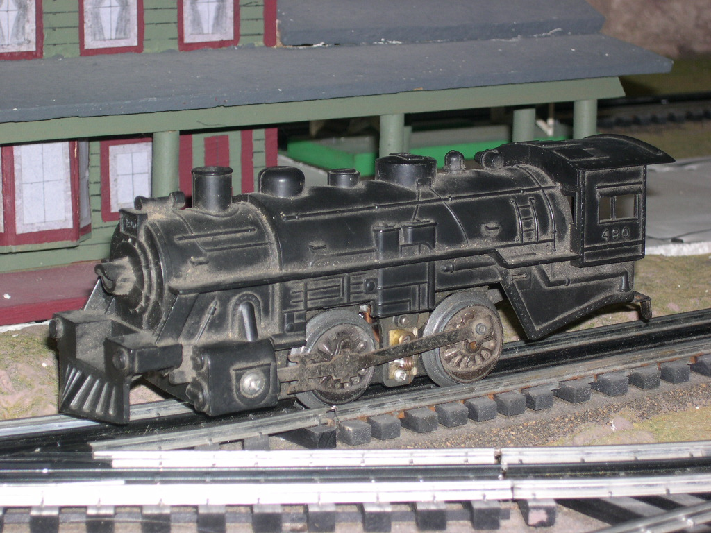 |
Marx 490
Plastic 0-4-0 Steam Engine |
Runs fine. From my father. Plastic, has a light (not
working), two position E unit, no horn, no smoke, and no operating
couplers. Unknown vintage. |
| Modern
Vintage |
|---|
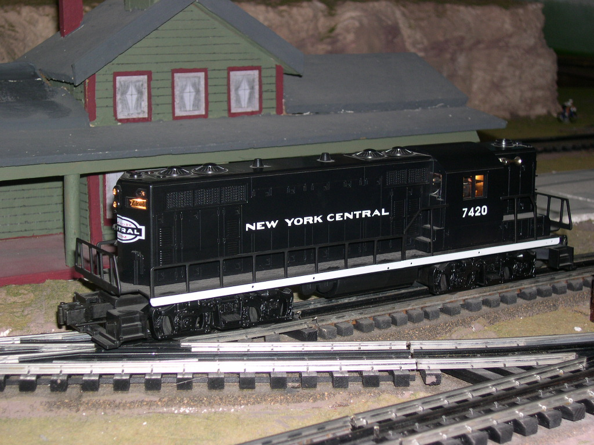 |
Lionel 7420
New York Central GP-7 Diesel |
Runs perfectly. I purchased this in the 1990's. Modern
(1990's) vintage. |
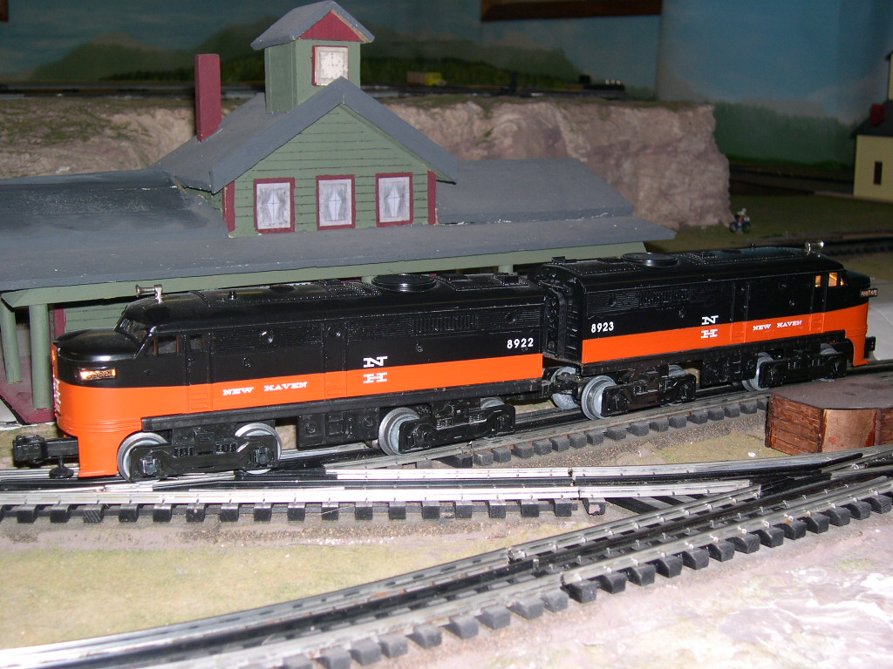 |
Lionel 8922
New Haven Diesel |
Runs perfectly. I purchased this in the 1990's with a
matching set of passenger cars (see below). Also, at about
the same time a set of New York Central Passenger cars were
purchased. Modern vintage. |
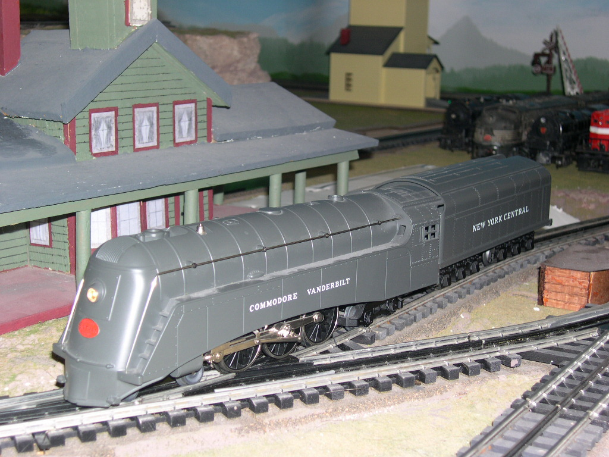 |
MTH
Commodore Vanderbilt |
I purchased this in the 1990's. It has rail sounds with a
really fun passenger station recording. Unfortunately, it
stopped working altogether in 2005. When power is applied it
clangs three times and sits. It doesn't seem to respond to any
commands and it will not move. I'm guessing the replacing the
battery is what is needed. New
Info: When I was putting it away I noticed that the
rubber drive tire was broken, exposing the metal wheel
underneath. It could be that is the cause of the problem. I
also noticed that there are two replacement rubber tires in the
box. When it did run it ran well,
produced lots of good smoke and the digit horn and bell
recordings were excellent. Modern vintage. |
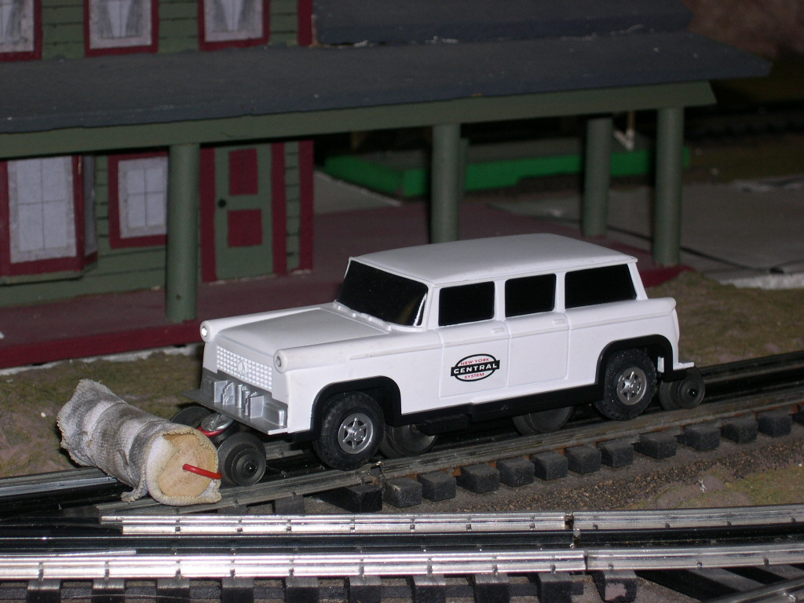 |
Lionel Work Car
Modified |
This simple work car was modified to dust the track. It has
no E-unit. I use
Lionel track cleaning fluid on the dusting cloth. The roller
does not roll but glides over the track. Turn the roller to use
a cleaner part of the cloth. Be sure to apply cleaning fluid to
the part of the dusting cloth that will glide over the track. I
purchased this new in the 1990's. |
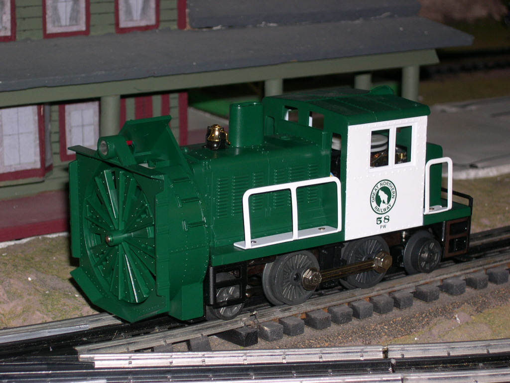 |
Lionel 58 PW
Great Northern Railway Rotary Snowplow |
The snow plow has a new electronic three position reversing
unit that always starts in neutral. Cycle the power twice to
get it moving. The little bell on top rocks as if to ring which
is very cute. It has a pullmore motor, headlamp, rotating snow
impeller, and a post-war builders plaque. Purchased in 2000.
Produced in 1999. Catalog number Lionel 6-18446. |
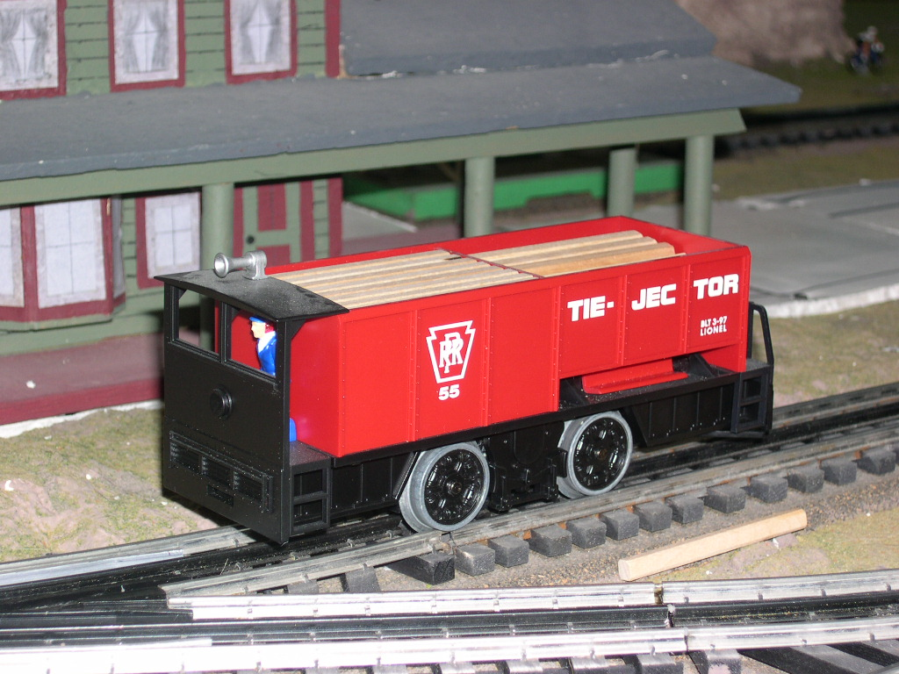 |
Lionel 55
Pennsylvania RR Tie-Jector |
This is an operating car with no reversing unit. It runs on
it's own and spits out RR ties as it goes. There are two track
sidings provided that can be used to throw a lever on this car
to turn on and off the tie spitting action. Very fun. I
purchased this in 1999 or thereabouts. It was built in 1997. |
| Operating Accessories |
|---|
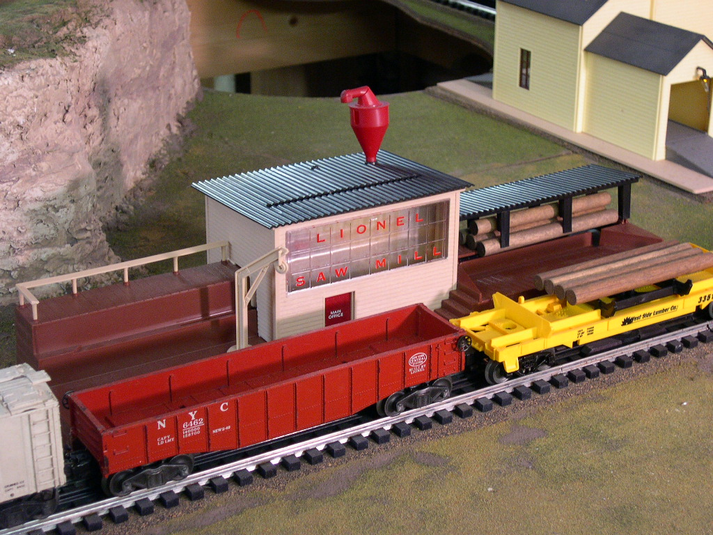
also: MOVIE |
Lionelville
Saw Mill |
This is accessory creates the illusion that logs are being
cut up into planks of wood. The log dump car, L3351, dumps a
load of logs onto the platform. The mill is then activated by a
button. The logs are taken into the mill and cut boards appear
from the other side. The cut boards are loaded into a slot in
the top of the mill and the logs taken in are retrieved by
opening a door in that back of the mill. This was purchased in
the 1990's and is modern vintage. |
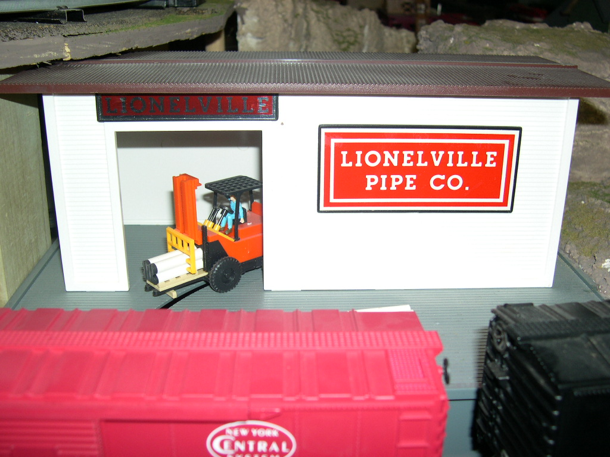
also: MOVIE |
Lionelville
Pipe Company |
This is accessory creates the illusion that pipes are being
loaded into a box car. The beauty is, any box car will do since
the pipes are actually retracted back into the forklift. The
movie says it all. I purchased this in the 1990's sometime. |
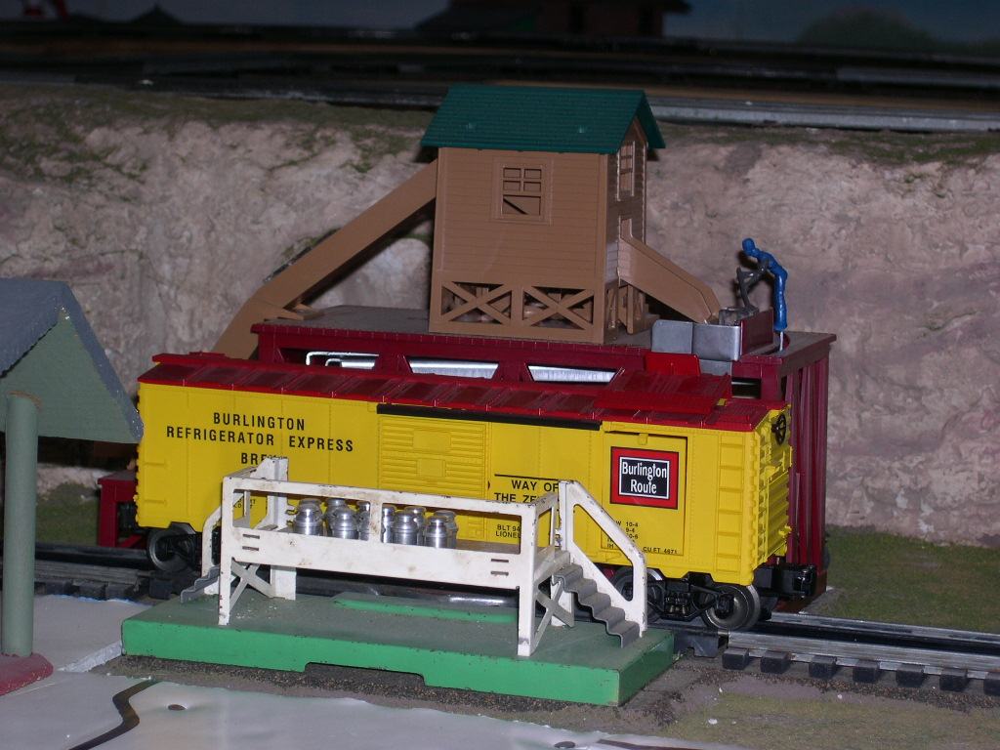
also: MOVIE |
Lionelville
Ice House |
This is accessory is a modern version of an old post-war
favorite. The refrigerator car is filled with blocks of ice by
the man on top of the structure. The movie says it all. I
purchased this in the 1990's sometime. |
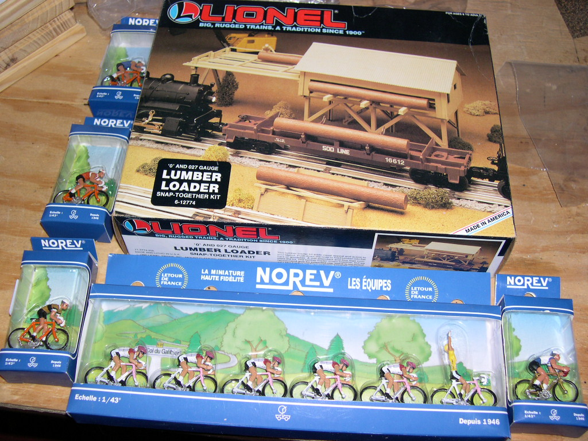 |
Lionel
Lumber Loader (6-12774) & Norev Minature Cyclists |
This is accessory is a manually operated lumber loader. The
logs are pushed one at a time from the platform into the house
and a lever on the back is depressed to release the log down
onto a log dump car. This snap-together kit was fully assembled
and then disassembled for repacking into the box pictured. The
roof did not come apart and barely fits in the box as-is.
Also pictured are several pro-cyclist minatures. They are
metal, painted, made in France and of good quality. Only one
has ever been out of the original box. I've got team Telecom (6
cyclists, 4006) as well as riders for Peugeot (4503), Kas
(4502), Bic (4505), Margant (4504), Festina (4521) and Molteni
(4501). |
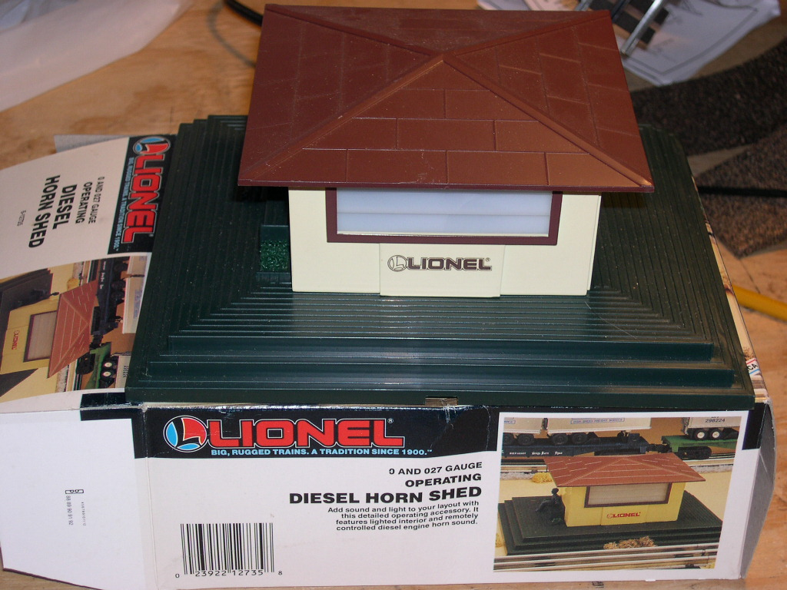 |
Lionel 6-12735
Diesel Horn Shed |
This is accessory provides a diesel horn sound. It's handy
to use with those locomtives with broken horns or no battery.
The sound is not great but is as good or better than most
diesel horns included with post-war engines. |
| Passenger Cars |
|---|
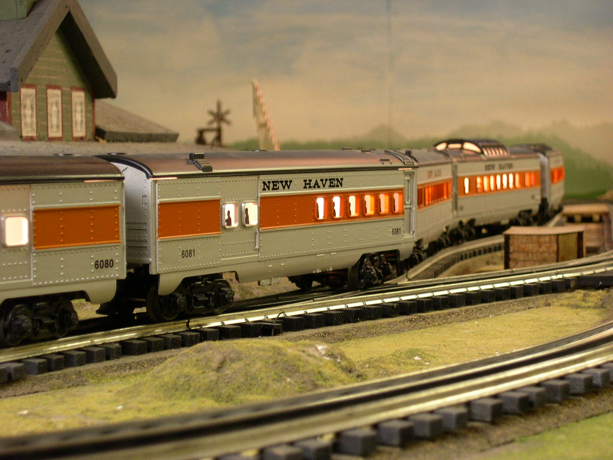
also: 1 2 3 4 5
|
Lionel 6080
New Haven Passenger Set |
Here we have the bagage car (6080), the combo car (6081), the
coach (6082), the dome car (6083), and the observation car
(6086). This set was purchased in the early 1990's and was
produced about that same time. |
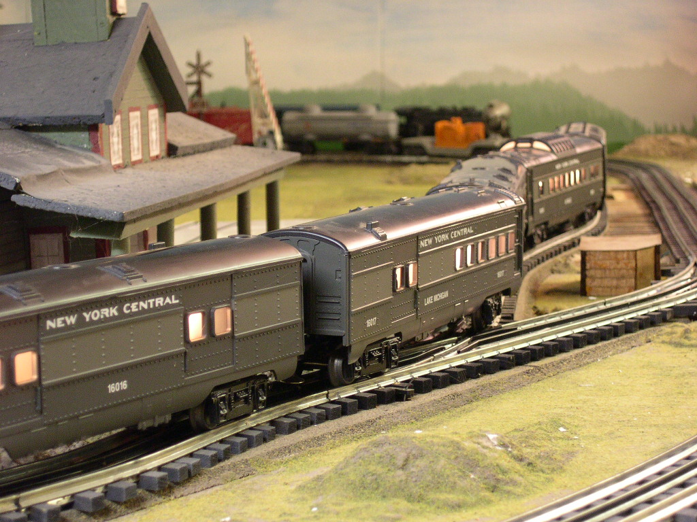
also: 1 2 3 4
|
Lionel 16016
New York Central Passenger Set |
Here we have the bagage car (16016), the combo car (16017), the
coach (16018), the dome car (16019), and the observation car
(16021). This set was purchased in the early 1990's and was
produced about that same time. |
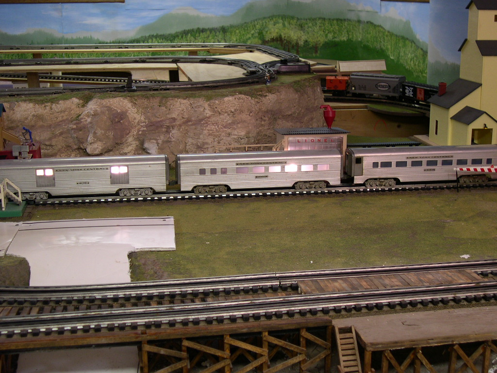
also: 1 2
|
AMT Aluminum
New York Central Passenger Set |
Here we have a bagage car, a diner, and a passenger car
made by American Model Trains. These were
manufactured in the 1950's, according to the shop keeper that
sold them to me -- I couldn't say for sure. The lights
work in all three units but the pickups and track need cleaning
so badly I wasn't able to get all three to stay on for the
photo. These are actual aluminum and appear to be close to
scale. They are a good match for F3 diesel which is why I
bought them. The couplers tend to break and right now both
couplers are broken on the passenger car (third car). These
were purchased in Georgia in about 1985. |
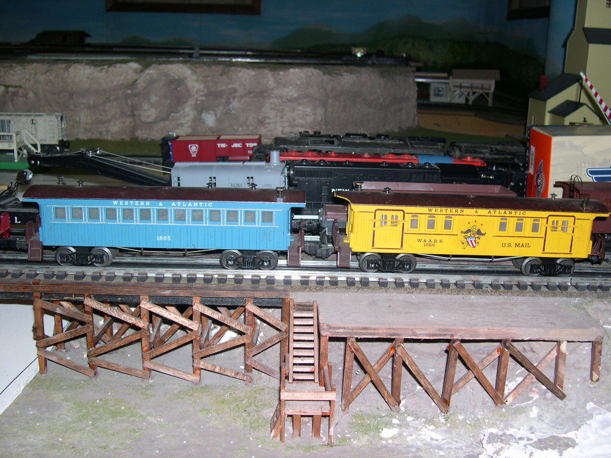 |
Lionel 1885 1866
General Passenger & Mail Cars |
These are the cars that came with the uncatelogued General
locomotive (see above). The mail car appears to be a
catelogued item but I could find no references regarding the
blue passenger car number 1885. Along with the locomotive,
these items came from my dad. |
| Operating Rolling
Stock |
|---|
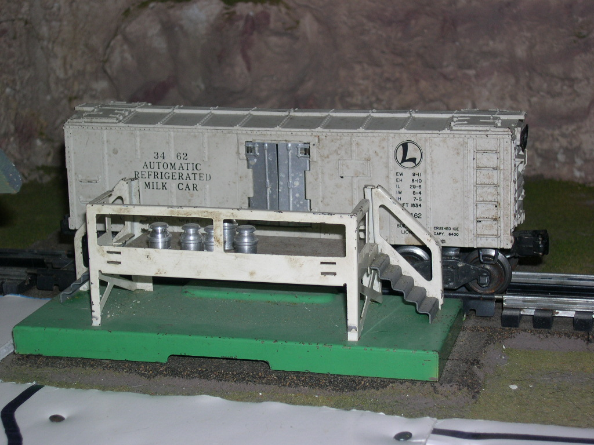
also: 1 2 Movie
|
Lionel 3462
Operating Milk Car |
This is one of the funnest items Lionel ever made. The
special track activates the car causing a man to bust through
the metal doors and shove a milk can onto the platform. The
cans have little magnets in them so that don't always go
flying. I purchased this in 1989 or thereabouts. It was
produced in 1948 and 1949. |
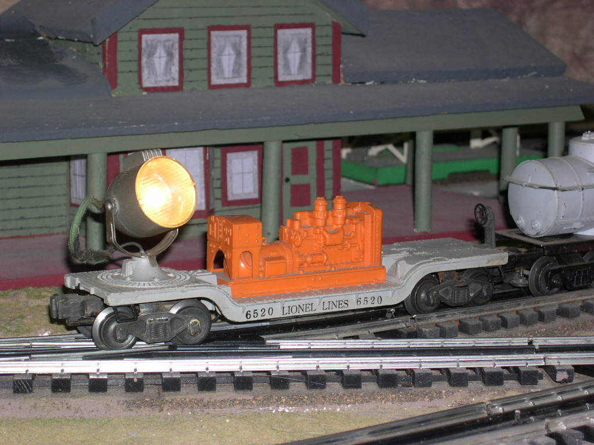 |
Lionel 6520
Operating Searchlight Car |
The magnetic track can be used to turn the searchlight on or
off. This version was produced in 1950 or 1951. |
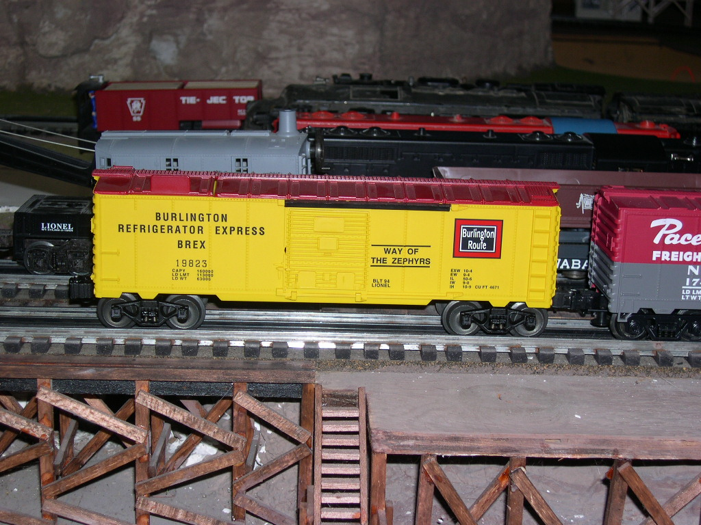 |
Lionel 19823
Burlington Ice-Refrigerated Box Car |
This car is for use with the ice house which is a super
fun accessory. The box car pulls up to the ice house which is
then activated by a remote button. A man the opens the top of
the box car and proceeds to fill the opening with large blocks
of ice. I purchased this in the 1990's. Vintage 1994
according to the markings. |
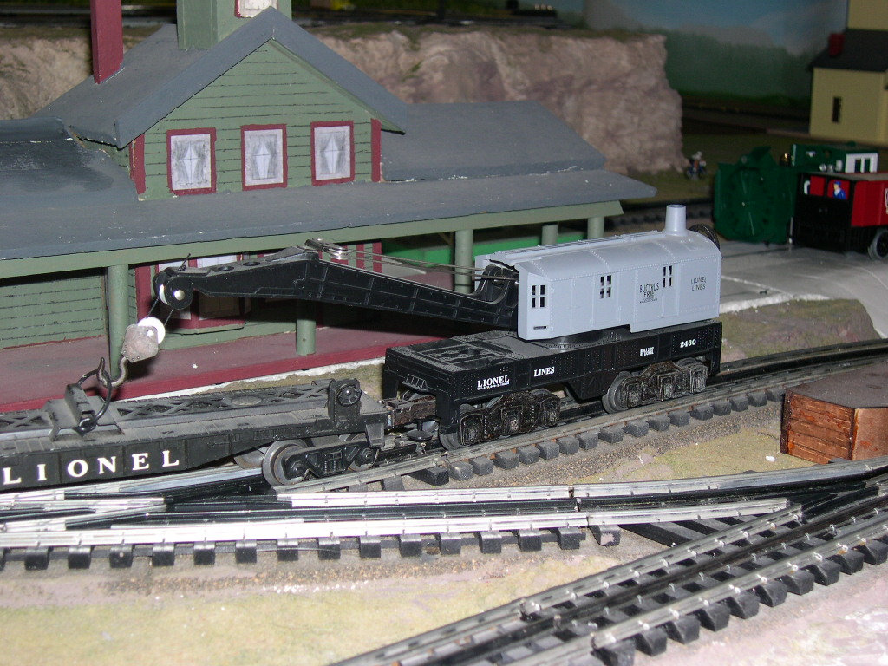 |
Lionel 2460
Bucyrus Erie Class 250 Crane Car |
This is a quality car with a manually operated crane. I
converted an old flat car to serve as the compagion utility car
and to keep the crane boom from moving around. The crane car
was urchased in 2000 or the late 90's. It was built in
1997. |
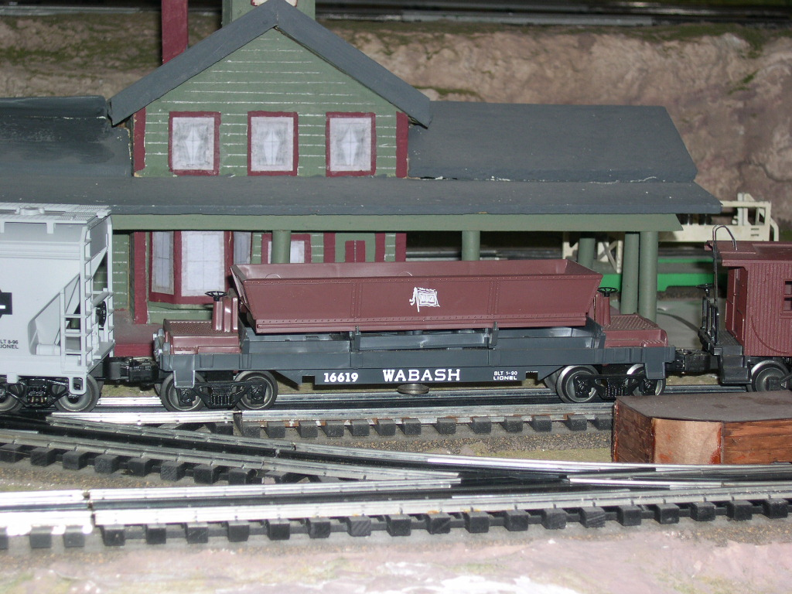 |
Lionel 16619
Operating Coal Dump Car |
This car uses the magnetic track to dump its load, typically
coal. Purchased in the 1990's, built 1990. |
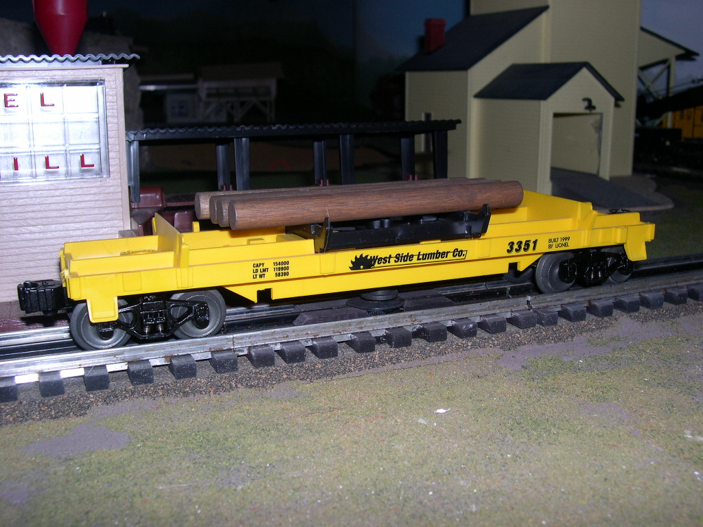 |
Lionel 16619
West Side Lumber Company Log Dump Car |
This car uses the magnetic track to dump its load, typically
logs. This car was the perfect find for me because I had
planned to model the fictional village of Velocipede and was
basing it on the actual village of Lombard, IL. For many years
in Lombard a lumber area dominated the track side envirnoment
and Lombard is a western suberb of Chicago. What better place
could there be for the West Side Lumber Company?
Purchased in the 1990's, built 1999. |
| Rolling Stock |
|---|
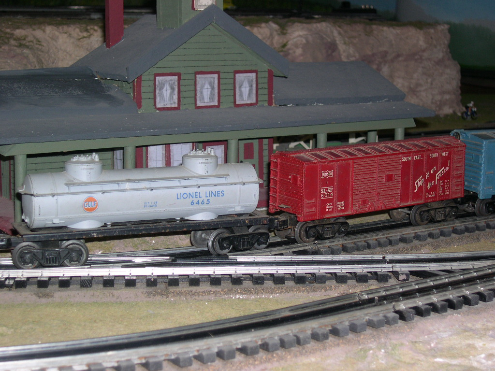 |
Lionel 6465
Gulf Oil Tank Car |
This turns out to a rare piece in collectable condition.
This one has some rust so it probably wouldn't pass the test.
It was built in 1958. |
|
Lionel 6014
Frisco Box Car |
This Lionel car has had the longest life of any other
produced by Lionel (from '51 to '69). The one here was built in
1958. We know this because of the AAR trucks and the red
body with white lettering. |
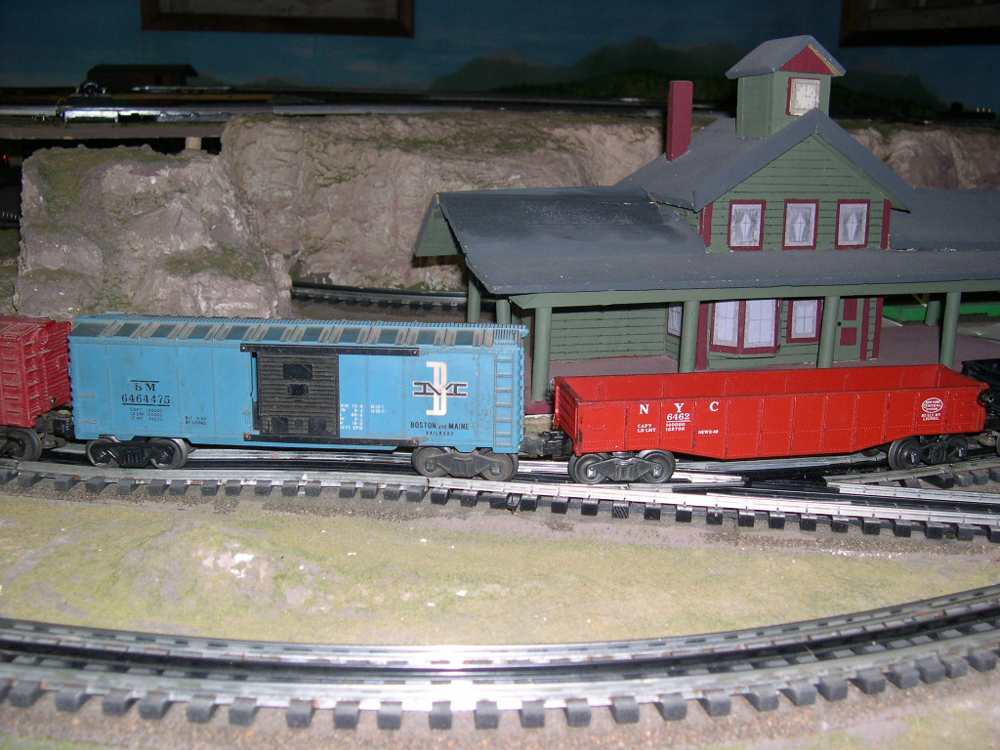 |
Lionel 6464-475
Boston & Maine Box Car |
Slightly interesting is this particular model was a first
run of this box car (1957) as indicated by the bar end truck.
However, one of the trucks was broken so I replaced it with an
AAR truck. I've had this since I was a kid. Vintage 1957. |
|
Lionel 6462
NYC Long Gondola |
This red gondola was produced from 1950 to 1954. The
barrels that came with it are long gone. |
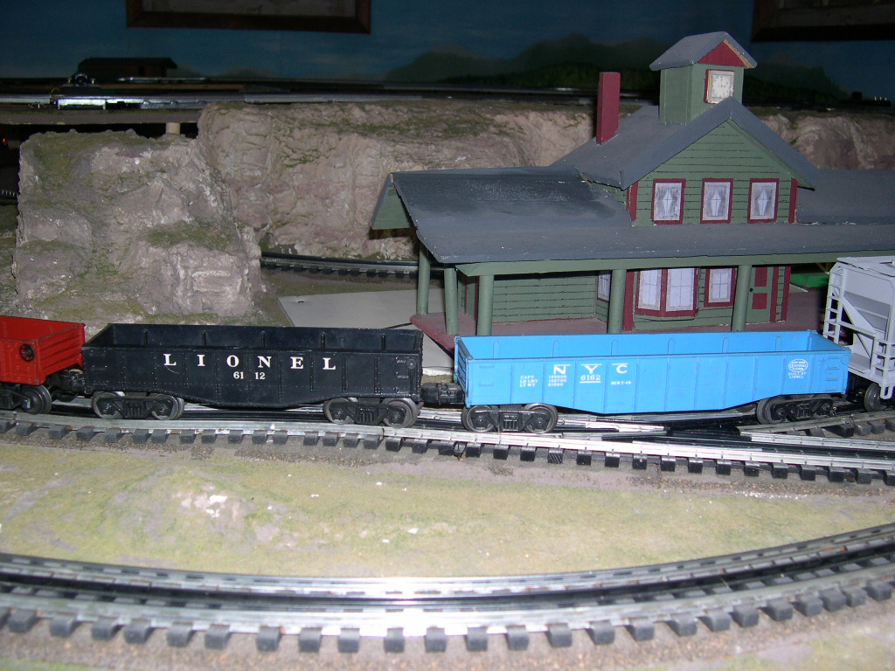 |
Lionel 6112
Lionel Gondola |
This black gondola was produced from 1956 to 1958. The
cannisters that came with it are long gone. This one with AAR
trucks was produced in 1957 or 1958. |
|
Lionel 6162
NYC Long Gondola |
This blue gondola was produced from 1959 to 1968. The
cannisters that came with it are long gone. This one has two
operating couplers which might place it early ('59 to '62) but
there is just no telling really. |
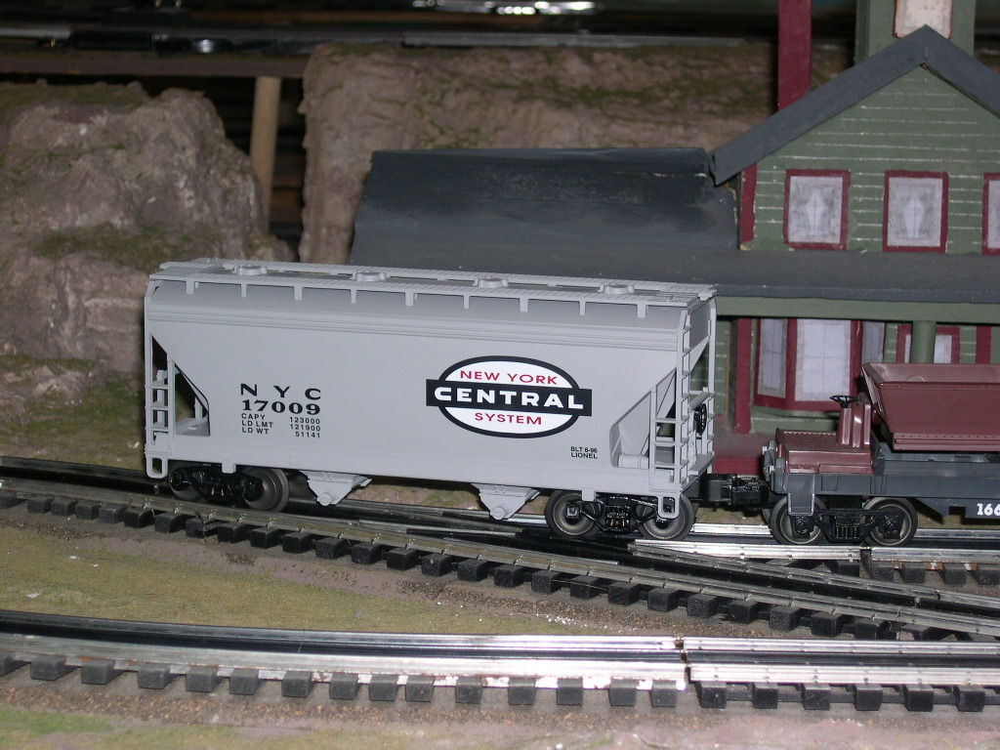 |
Lionel 17009
New York Central O Scale Hopper |
This cylindrical grain hopper is to scale for standard O gauge
making it slightly larger than most of the other rolling stock
but good looking nonetheless. Purchased in 2000+, built in
1996. |
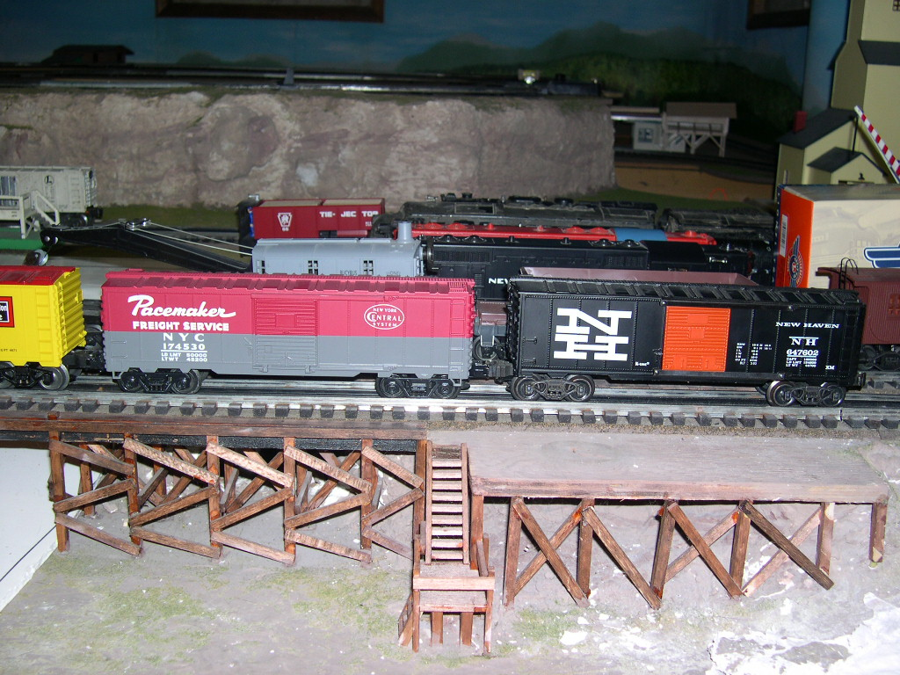 |
IDM 174530 & K-Line 647602
Box Cars |
These are new box cars with the road names of the New York
Central (IDM 1001) and the New Haven (K-Line) lines.
Purchased in the 1990's. Modern vintage. |
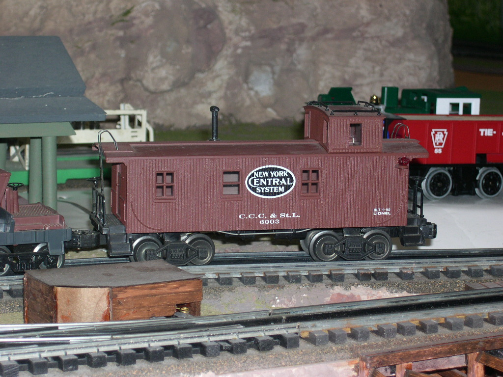 |
Lionel 6003
New York Central Lighted Caboose |
This car is to scale for standard O gauge making it slightly
larger than most of the other rolling stock but good looking
nonetheless. Purchased in the 1990's, built in 1990. |